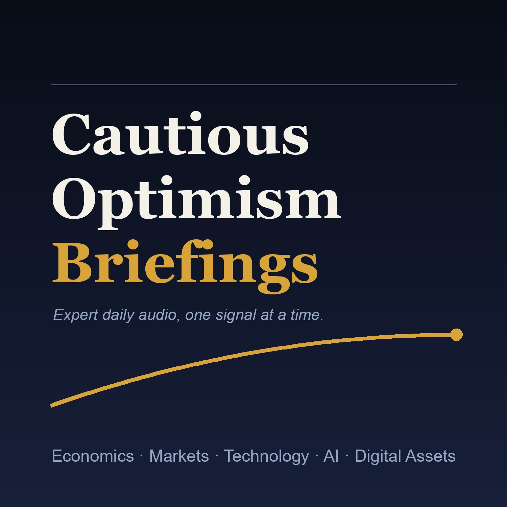

Cautious Optimism Briefings
Economics · Markets · Technology · AI · Digital Assets
Expert-level daily audio briefings for a sophisticated listener — leading with what is genuinely new or non-consensus, and favoring analysis over recap. One signal at a time.
Standing briefings
- Frontier AI Lab Competition
- Capital Markets Cross-Asset Radar
- Digital Money, Crypto, and Market Structure
- Strategic Power, Energy, and Institutional Change
Subscribe via the RSS feed, or find Cautious Optimism Briefings on Spotify once it is live.